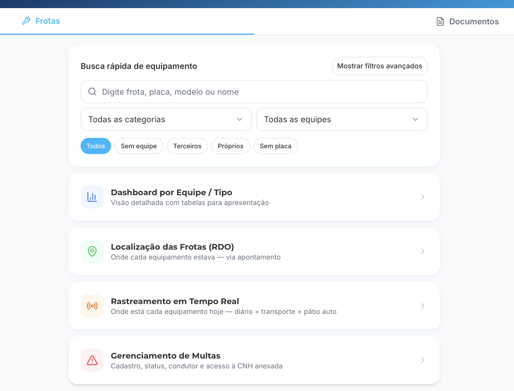
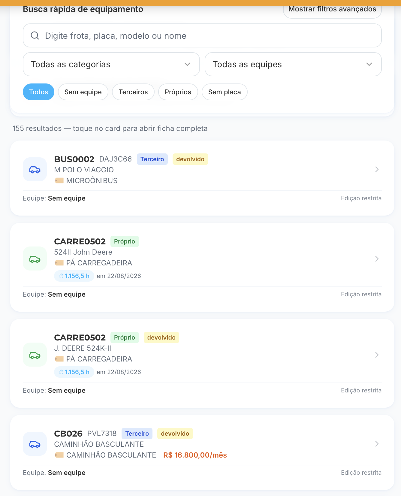
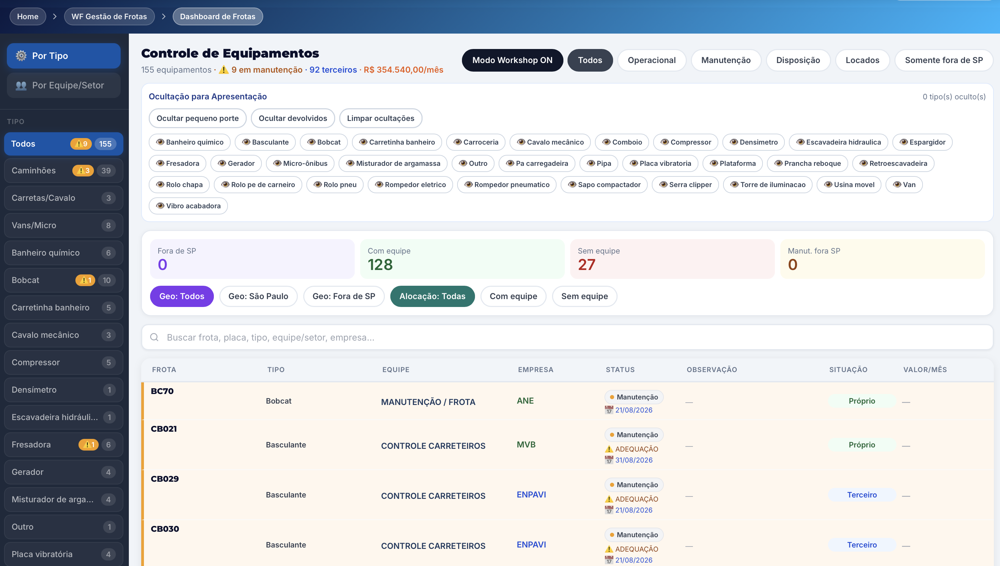
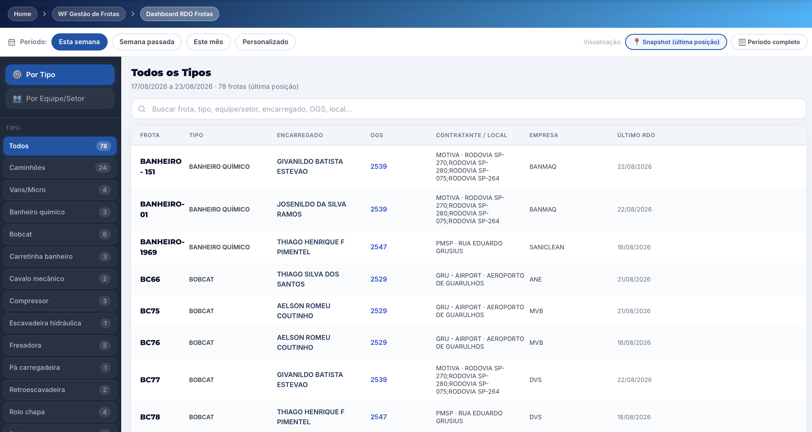
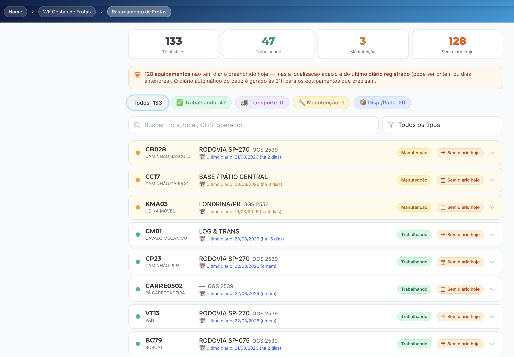
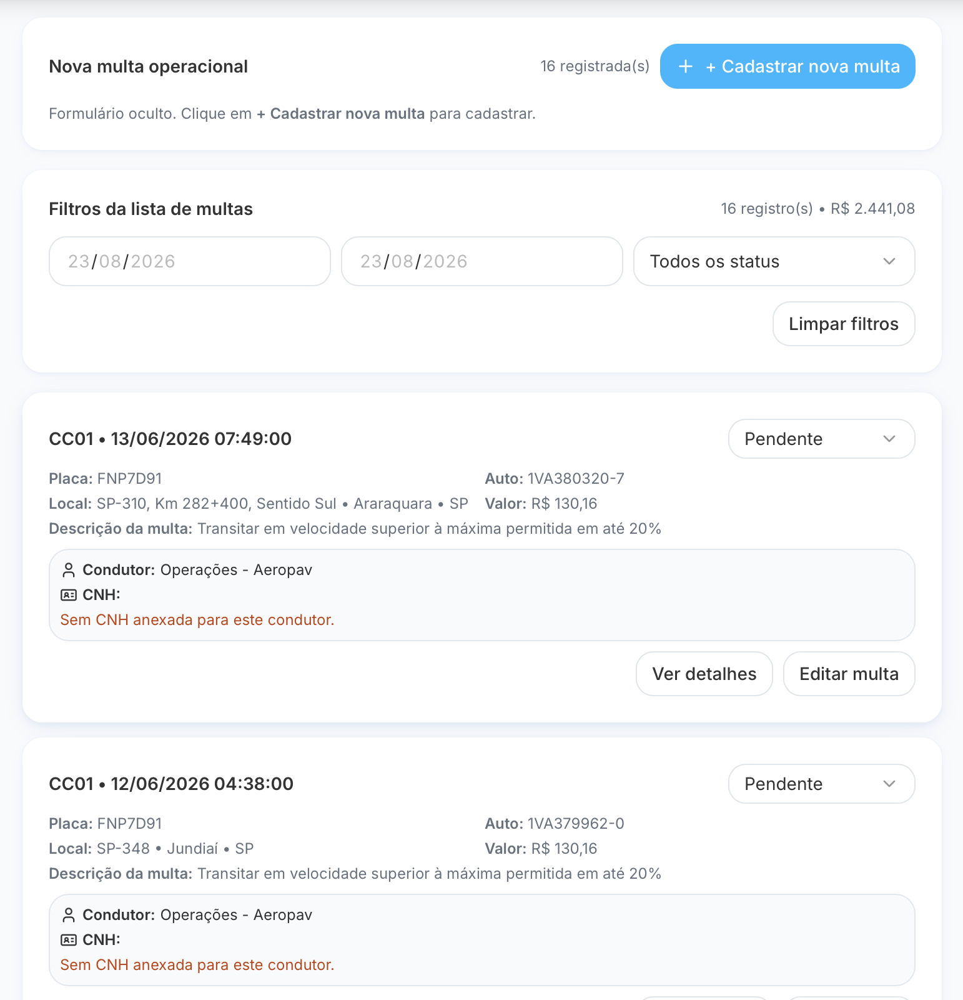
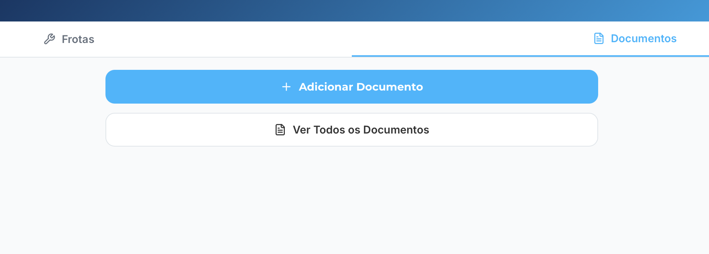
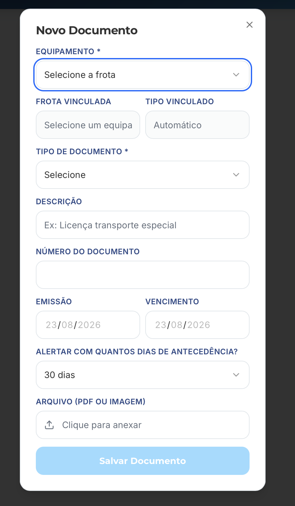

Resumo executivo
Visibilidade em tempo real
Localização, status e uso da frota em uma visão unificada.
Padronização operacional
Busca, filtros, cards e dashboards para decisões rápidas e replicáveis.
Governança e compliance
Documentos, multas, CNH e histórico operacional em trilha auditável.
Problemas que o módulo resolve
Antes
- Planilhas descentralizadas e dados desencontrados.
- Dificuldade para localizar ativos e priorizar manutenção.
- Multas e documentos sem fluxo único de acompanhamento.
Depois
- Operação concentrada em um único módulo.
- Dashboards e rastreamento com filtros claros por equipe/tipo/status.
- Processo contínuo para multas, documentos e alertas de vencimento.
Resultado esperado: menos retrabalho, maior previsibilidade e decisões mais rápidas na rotina.
Jornada visual do usuário
1) Entrada operacional 2) Priorização 3) Ação 4) Registro e evidência
Home: busca rápida + atalhos para os fluxos principais.

Listagem operacional: leitura rápida de tipo, status, equipe e custo.

Dashboard Equipe/Tipo: visão executiva para reuniões de gestão.

Dashboard RDO: snapshot e histórico por período para rastreabilidade.

Rastreamento: priorização por status e pendência de diário.

Multas: cadastro, filtro, status e vínculo com condutor/CNH.

Documentos: ações rápidas para incluir e consultar documentos.

Cadastro de documento com vencimento, alerta e anexo.
Módulos demonstráveis para clientes
Operação diária
- Busca rápida de ativos.
- Filtros por categoria, equipe e condição.
- Acompanhamento de status e equipe.
Gestão e controle
- Dashboard por equipe/tipo com KPIs.
- RDO com recorte temporal e localização.
- Rastreamento unificado para priorização.
Risco e compliance
- Fluxo de multas com status e histórico.
- Vínculo de condutor e CNH.
- Gestão de documentos com alerta de vencimento.
Escalabilidade
- Modelo aplicável em empresas de diferentes portes.
- Padronização de fluxo entre filiais e obras.
- Adaptação por perfil de acesso e regras internas.
Formato de apresentação recomendado (para venda/demonstração)
- 5 min: Dor do cliente e visão geral do módulo.
- 10 min: Home + listagem operacional (agilidade e adoção).
- 10 min: Dashboards (gestão, KPI e rastreabilidade).
- 8 min: Rastreamento + Multas + Documentos (compliance).
- 5 min: ROI esperado e próximos passos de implantação.
Dica comercial: conduzir a demo com caso real de “dia típico de operação”, não só por menu.
Próximo passo
Se quiser, eu já monto a próxima versão em formato “deck executivo” (estilo slides no próprio HTML), com narrativa para diretoria:
- Contexto → dor → solução → evidências visuais → ganhos esperados.
- Versão “curta” (10 min) e versão “completa” (30 min).